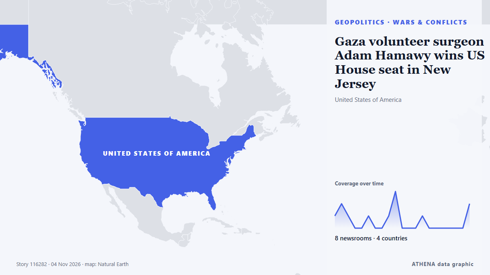

Gaza volunteer surgeon Adam Hamawy wins US House seat in New Jersey

Democrat Adam Hamawy is projected to win an open seat representing New Jersey’s 12th Congressional District, according to Decision Desk HQ, keeping the safe blue seat in Democratic hands. из The Hill
Независимые источники: 9 изданий в 5 странах, с 4 нояб.; первым сообщил The Hill; освещение идёт на спад. ATHENA оценивает риск как повышенный (4.9/10), прежде всего из-за тяжести описываемого ущерба и географического и отраслевого охвата. Уверенность — 87 % (высокая); подтверждают независимые источники: 9 изданий, средняя надёжность источников — 80 %. СМИ по странам: Турция (3), Саудовская Аравия (2), Соединенные Штаты (1). Освещение: с 4 нояб. по 5 нояб., 37 ч.
Почему это важно: Мониторинг следит за конфликтом вокруг Израиля, Газы, Западного берега и Ливана — военными событиями, гуманитарной ситуацией и дипломатией — так, как их освещает мировая пресса.
Что изменилось: 4 новых сообщений от 3 редакций за 24 часа до 5 нояб..
Первый заголовок: Hamawy wins open New Jersey House seat, succeeding Watson Coleman
Заголовки приводятся на английском языке, как они были опубликованы.
Коротко в цифрах
Отобрано, оценено и написано по опубликованной методологии ATHENA. Ни один редактор не вмешивается в отдельные события. Как это создаётся ›
| 04 Nov 01:15 UTC | 3 |
|---|---|
| 04 Nov 03:15 UTC | 1 |
| 04 Nov 05:15 UTC | 1 |
| 04 Nov 07:15 UTC | 0 |
| 04 Nov 09:15 UTC | 4 |
| 04 Nov 11:15 UTC | 0 |
| 04 Nov 13:15 UTC | 1 |
| 04 Nov 15:15 UTC | 0 |
| 04 Nov 17:15 UTC | 0 |
| 04 Nov 19:15 UTC | 0 |
| 04 Nov 21:15 UTC | 2 |
| 04 Nov 23:15 UTC | 0 |
| 05 Nov 01:15 UTC | 0 |
| 05 Nov 03:15 UTC | 0 |
| 05 Nov 05:15 UTC | 0 |
| 05 Nov 07:15 UTC | 0 |
| 05 Nov 09:15 UTC | 0 |
| 05 Nov 11:15 UTC | 0 |
| 05 Nov 13:15 UTC | 1 |
| 04 Nov 02:21 UTC | 2.4 |
|---|---|
| 04 Nov 06:23 UTC | 4.3 |
| 04 Nov 11:20 UTC | 5.5 |
| 04 Nov 11:42 UTC | 4.9 |
| 04 Nov 22:33 UTC | 5.2 |
| 05 Nov 14:30 UTC | 4.9 |
Откуда эти цифры
Значимость
Риск
Уверенность
Освещение — кто сообщил и когда
заголовок в оригинале · открывает источник- The Hill · Соединенные ШтатыHamawy wins open New Jersey House seat, succeeding Watson Coleman
- The National · ОАЭAdam Hamawy, Egyptian American who volunteered in Gaza, wins US House race
- Anadolu Agency (English) · ТурцияDemocrat Adam Hamawy becomes New Jersey’s 1st Muslim member of Congress
- TRT World · ТурцияMuslim surgeon who worked in Gaza's war-ravaged hospital storms to historic US Congress victory
- Middle East Eye · INTAdam Hamawy makes history as New Jersey’s first Muslim congressman
- The New Arab · INTAdam Hamawy, surgeon who treated Gaza's wounded, wins US seat
- Arab News · Саудовская АравияWho is Adam Hamawy, the Gaza volunteer surgeon heading to Congress?
- Anadolu Agency (English) · ТурцияPROFILE - Adam Hamawy: Surgeon who challenged US support for Israel wins New Jersey House seat
- Middle East Eye · INTGaza volunteer surgeon Adam Hamawy wins US House seat in New Jersey
- Asharq Al-Awsat (English) · Саудовская АравияFrom Gaza to Congress: Adam Hamawy Becomes First Muslim to Represent New Jersey in the House
- Middle East Eye · INTEgyptian doctor who undertook medical missions to Gaza will now go to US Congress
- Middle East Eye · INTEgyptian doctor who undertook medical missions to Gaza will now go to US Congress
- Al Jazeera English · Катар‘Healthcare not bombs’: How Gaza shaped Adam Hamawy’s path to US Congress